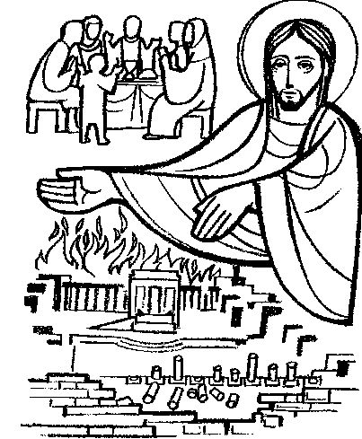
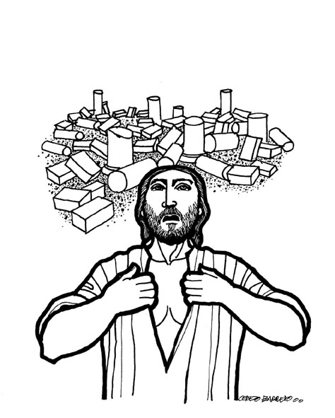

This Week: Isaiah 65:17-25 and Isaiah 12 or Malachi 4:1-2a and Psalm 98, 2 Thessalonians 3:6-13, Luke 21:5-19

Luke 21:5-19, Misioneros Del Sagrado Corazon en el Peru

. Ordinary
33 at Cerezo
Barredo's weekly gospel illustrations
Ordinary
33 at Cerezo
Barredo's weekly gospel illustrations
Next week: Jeremiah 23:1-6 and Luke 1:68-79 or Jeremiah 23:1-6 and Psalm 46, Colossians 1:11-20, Luke 23:33-43